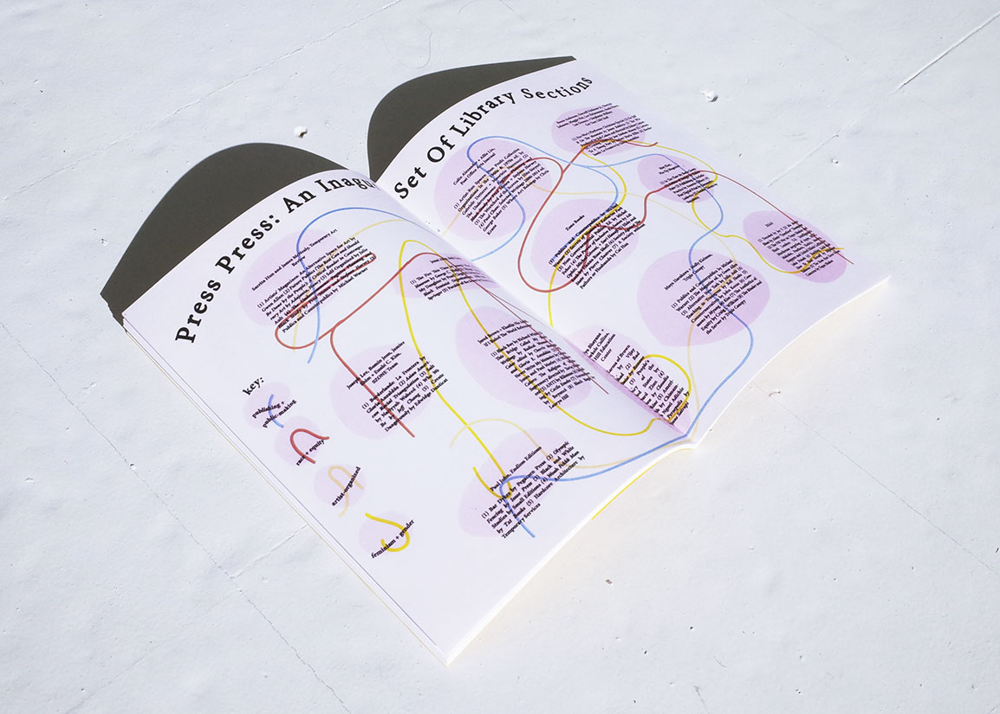
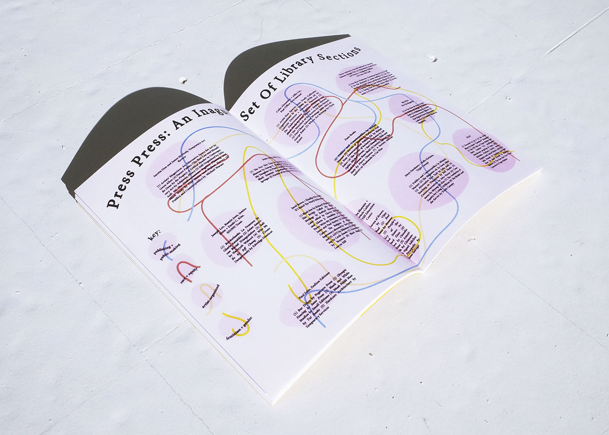

Press Press is an interdisciplinary publishing initiative that operates out of a storefront studio in Baltimore City and was founded in 2014. PP’s publishing practice is organized around two key goals; first, to shift and deepen the understanding of voices, identities, and narratives that have been suppressed or misrepresented by the mainstream, so far focusing on immigration and race in the United States; and second, to build networks of relationships through publishing practices centered on self-representation and gathering. Through an understanding of publishing as the act of gathering a public, PP’s streams of work include public cultural programming, an open-access publishing studio that’s based on an exchange economy, ongoing publishing workshops in an immigrant + refugee only space, and the ongoing production of print and digital publications.


 
